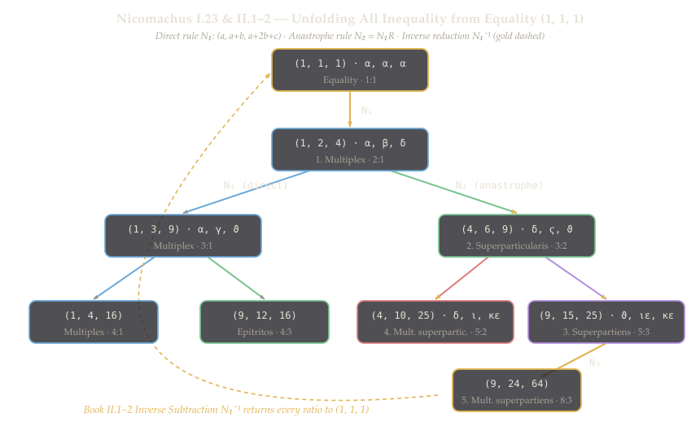

Introduction to Arithmetic¶
Ἀριθμητικὴ Εἰσαγωγή (Introductio Arithmetica) — Nicomachus of Gerasa
Books¶

Philosophy as knowledge of eternal reality, the fourfold Quadrivium of mathematical sciences, prime numbers and the Odd Sieve of Eratosthenes, perfect numbers, and the unfolding of all species of relative inequality from equality.

Inverse reduction of ratios to equality, alpha-pebble polygonal numbers and arithmetic gnomons, solid numbers and pyramids, Plato’s Same and Other, the sum of consecutive odd cubes, and the complete system of ten musical means culminating…
Authoritative editions, ancient commentaries, and companion mathematical treatises (17 entries) cited across Introductio Arithmetica.
Complete structural concordance mapping all 20 canonical chapter groups across Books I–II of Nicomachus of Gerasa's Introductio Arithmetica to Richard Hoche's Teubner Greek pagination (hoche:1866), Martin Luther D'Ooge's English pagination (dooge:1926), Boethius's Latin De Institutione Arithmetica (boethius:friedlein:1867), and companion GEOMETOR Digital Scriptorium codices.
Systematic lexicon of 27 technical concepts governing discrete multitude (poson), continuous magnitude (pēlikon), the four mathemata (quadrivium), ratio species, figurate gnomons, Same and Other, and the Ten Means.
Table of Contents¶
Scholarly Apparatus¶
Treatise Books
Scholarly Apparatus